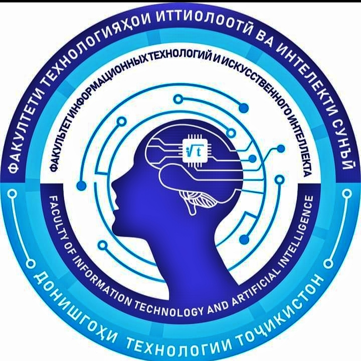

Хуш омадед!
Ба донишгоҳи Технологии Тоҷикистон!

Факултети Технологияҳои иттилоотӣ ва интеллекти сунъӣ
Асосӣ
Ҷадвали дарсӣ
1-40010101
1-40010102
1-40010103
1-40010104
Ихтисосҳо
1-40010101
1-40010102
1-40010103
1-40010104
Натиҷаи имтиҳонҳо
1-40010101
1-40010102
1-40010103
1-40010107
Рақамҳои мобилии донишҷуён
1-40010101
1-40010102
1-40010103
1-40010104
1-40010107
Преподаватели
Расписание
E-book
Донишгоҳи Технологии Тоҷикистон
Донишгоҳи технологии Тоҷикистон бо Қарори Шӯрои Вазирони ҶШС Тоҷикистон аз 20 сентябри соли 1990 таҳти рақами № 207 ҳамчун Коллеҷи олии технологии Тоҷикистон ва соли 1991 бо Қарори Девони Вазирони ИҶШС аз 29 июли соли 1991 таҳти рақами № 530 ва Қарори Девони Вазирони ҶШС Тоҷикистон аз 29 сентябри соли 1991 ба Донишкадаи технологии саноати сабук ва хӯрокворӣ ва бо Қарори Шӯрои Вазирони Ҷумҳурии Тоҷикистон таҳти рақами №80 аз 19 феврали соли 1993 он ба Донишгоҳи технологии Тоҷикистон табдил дода шуд. Донишгоҳи технологии Тоҷикистон бо вуҷуди ҷавон буданаш, яке аз муассисаҳои бонуфузи таълимии таҳсилоти олии касбии Ҷумҳурии Тоҷикистон буда, барои амалӣ намудани ҳадафҳои стратегияи давлатӣ дар соҳаи маориф тамоми неруи зеҳнии ҳайати омӯзгорону профессорони донишгоҳро равона намуда, ҷиҳати баланд бардоштани мақоми донишгоҳ дар фазои ҷаҳонии таҳсилот саъю кӯшиш менамояд. Донишгоҳи технологии Тоҷикистон ягона донишгоҳ дар Ҷумҳурии Тоҷикистон мебошад, ки мутахассисони баландихтисосро дар соҳаи саноати сабук ва хӯрокворӣ тайёр мекунад. Донишгоҳи технологии Тоҷикистон яке аз ду донишгоҳҳои таҷрибавӣ дар ҷумҳурӣ мебошад, ки гузариш ба низоми кредитии таҳсилотро оғоз кардааст. Ҳанӯз соли 2005 донишҷӯёни ду факултаи донишгоҳ – муҳандисӣ – иқтисодӣ ва факултаи байналхалқӣ ба омӯзиши технологияи кредитӣ оғоз намуданд. Дар солҳои охир, донишгоҳ таҷрибаи зиёдеро дар низоми кредитии таҳсилот ба даст оварда, айни замон тамоми низомномаҳо ва маводҳои таълимию методиро ба талаботи низоми кредитии таҳсилот мутобиқ намуда , баҳри амали намудани онҳо иқдои менамояд. Дар Донишгоҳ Маркази машварат ва бақайдгирӣ фаъолият менамояд, ки дар он маълумотҳои зарурро оид ба хатсайри омӯзиши донишҷӯён аз лаҳзаи дохилшавӣ то хатм дастрас кардан мумкин аст. Фаъолияти Марказ пурра автоматикунонида шудааст. Имтиҳонҳои фосилавӣ ва ниҳоӣ дар шакли имтиҳони тестӣ бо истифода аз технологияҳои компютерӣ қабул карда мешавад. Тайёр намудани мутахассисони маълумоти олидошта дар донишгоҳ дар 8 факултетҳо аз рӯи 41 ихтисоси бакалавр, 36 ихтисоси магистратура ва 8 ихтисоси докторантура амалӣ карда мешавад. Донишгоҳи технологии Тоҷикистон яке аз аввалин донишгоҳҳои ҷумҳурӣ аст, ки дар тӯли фаъолияти худ тадриҷан муқаррароти асосии раванди Болонияро амалӣ менамояд. Аз оғози соли таҳсили 2005-2006 татбиқи барномаҳои таълимӣ аз рӯи низоми кредитии таҳсилот амалӣ гардида, дар айни замон натиҷаҳои воқеъи ҳам дар омӯзиши фанҳои хатмӣ ва интихобӣ ба даст оварда шуда, чунин тавсияҳои раванди Болония ба даст оварда шудааст: системаи се зинаи таҳсилоти олӣ; зудҳаракатии академии донишҷӯён ва устодон; назорати сифати таҳсилоти олӣ; иштироки фаъоли донишҷӯён дар ташаккули барномаҳои таълимӣ, ташкили ҷараёни таълим ва корҳои иҷтимоӣ; таълими якумрӣ, фосилавӣ ва омӯзиши электронӣ. Барномаҳои таълимӣ мутобиқи стандартҳои давлатии таҳсилоти олии касбии Ҷумҳурии Тоҷикистон таҳия карда шудаанд. Барномаҳои таълимии ихтисосҳо аз фанҳои ҳатмӣ ва элективӣ иборат буда, дарсҳо дар донишгоҳ бо забонҳои тоҷикӣ, русӣ ва англисӣ гузаронида мешаванд. Дар тӯли мавҷудияти худ Донишгоҳи технологии Тоҷикистон барои соҳаҳои гуногуни хоҷагии халқи кишвар зиёда аз 12 500 нафар мутахассисони баландихтисосро тайёр кардааст, ки беш аз 600 нафари онҳо сазовори дипломи аъло гардидаанд. Дар айни замон дар донишгоҳ 280 омӯзгор, аз ҷумла 22 доктор ва 120 номзади илм фаъолият доранд. Сатҳи дараҷа ва унвони илмидоштаи ҳайати омӯзгорони донишгоҳ 50,7% -ро ташкил медиҳад. Аз шумораи умумии ҳайати омӯзгорон 210 нафар (75%) кормандони доимӣ мебошанд, ки 108 нафарашон дорои унвони номзад ва доктори илм мебошанд. Дар донишгоҳ 5884 донишҷӯ таҳсил мекунанд (то 10 сентябри соли 2019), ки аз онҳо 4442 (75,4%) донишҷӯёни шӯъбаи рӯзона, 176 (3,0%) магистратура ва 1266 донишҷӯ (21,5%) дар шӯъбаи таҳсили ғоибона ва фосилавӣ. мебошанд, Моҳи декабри соли 2013 Донишгоҳи технологии Тоҷикистон аз ҷониби Агентии Интерфакс ягона донишгоҳ дар Ҷумҳурии Тоҷикистон эътироф карда шуд, ки ба беҳтарин 200 донишгоҳҳои кишварҳои ИДМ шомил карда шудааст. Дар натиҷаи мониторинги Агентии Интерфакс дар байни 400 донишгоҳҳои беҳтарини ИДМ Т Донишгоҳи технологии Тоҷикистон ҷои 151-умро ишғол намуд. Аз рӯи натиҷаҳои рейтинги донишгоҳҳои бисёрсоҳавӣ, ДТТ дар рейтинги миллии мактабҳои олии Ҷумҳурии Тоҷикистон – дар соли 2016 ҷои 13-ум ва дар соли 2018 ҷои 10-ум ишғол намуд, ки афзоиши мунтазами рейтинги ДТТ-ро дар байни мактабҳои олии Ҷумҳурии Тоҷикистонро тавсиф менамояд. Донишгоҳ дар сохтори худ дорои 8 факултет, 19 кафедра, 3 марказ, инчунин Институти технология ва идоракунии инноватсионӣ дар шаҳри Кӯлоб, филиали донишгоҳ дар шаҳри Исфара, гимназияи Кӯлоб ва литсейи инноватсионии Душанбе мебошад. Дар ДДТ инфрасохтори зарурии ҷараёни таълимӣ ба вуҷуд оварда шудааст. 133 синфхона, аз ҷумла 26 толори лексионӣ, 25 синфхонаи компютерӣ, 17 озмоишгоҳ ва 65 синфхона барои машғулиятҳои амалӣ ва семинарӣ таъмин карда шуданд. Шумораи ҷойҳо дар донишгоҳ 3380 ададро ташкил медиҳад, ки аз он 1815 ҷой барои дарсҳои лексионӣ, 625 ҷой барои машғулиятҳои амалӣ, 598 ҷой дар синфхонаҳои компютерӣ ва 342 ҷой барои машғулиятҳои озмоишӣ мебошанд. Дар донишгоҳ ҳамаи озмоишгоҳҳо бо таҷҳизоти муосир таҷҳизонида шудааст. Аз он ҷумла 54 синфхонаи донишгоҳ бо технологияҳои мултимедиявӣ (тахтаҳои электронӣ ва проекторҳо) муҷаҳҳаз карда шудаанд. Дар айни замон дар ҷараёни таълим зиёда аз 900 компютер, 247 принтер, 94 проектор, 64 тахтаи электронӣ, 43 сканнер ва 20 мошини нусхабардорӣ истифода мешаванд. Ҳамкориҳои байналмилалӣ дар заминаи зиёда аз 70 созишномаҳои бо донишгоҳҳои хориҷӣ, марказҳои таҳқиқотӣ ва дигар созмонҳои илмии 25 давлати Аврупо, Шарқи Осиё, Осиёи Ҷанубу Шарқӣ, Кореяи Ҷанубӣ, Чин, кишварҳои ИДМ баимзорасида сурат мегирад. Ҷуғрофияи зудҳаракатии академияи омӯзгорон ва донишҷӯён Италия, Испания, Ҳиндустон, Хитой, Корея, Украина, Лаҳистон, Федератсияи Россия, Ҷумҳурии Федеративии Олмон, Ҷумҳурии Беларус, Қазоқистон, Қирғизистон, Португалия, Словакия ва дигар кишварҳоро фаро мегирад. Донишгоҳи технологии Тоҷикистон дар барномаҳо ва лоиҳаҳои байналмилалӣ, аз қабили Эразмус Мундус, Эразмус +;GIZ ; JICA; WTIT; Бонки ҷаҳонӣ; ITS; UNDP; Бунёди Оғахон, ЮНЕСКО, LOEO, ITEC ва ғайра фаъолона ширкат меварзад.